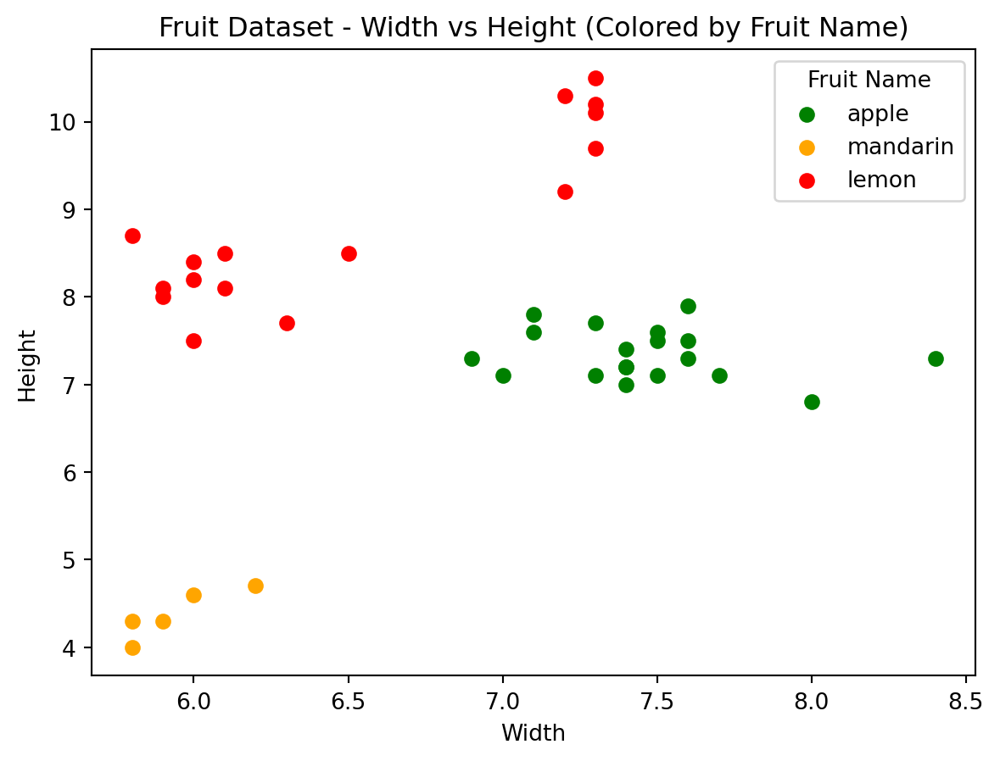

import matplotlib.pyplot as pltimport seaborn as snsimport pandas as pdfrom sklearn.neighbors import KNeighborsClassifier # get accuracy by KNN classifierfrom sklearn.model_selection import train_test_splitfrom sklearn.preprocessing import MinMaxScaler
Classification in machine learning is a method used to teach models how to discern and assign predefined categories or classes to input data based on its features or attributes. It’s a foundational concept that serves as the backbone for various tasks, enabling machines to categorize or label data. This ability is crucial in making informed decisions or predictions.
Through classification, machines learn patterns from labeled examples. For instance, in the case of this fruit dataset (found here), the model learns to associate certain combinations of mass, width, height, and color score with specific fruit types (e.g., apple, mandarin, lemon). By identifying these patterns, the model can then categorize the fruits based on their features into the appropriate classes it has learned. This ability to generalize from known patterns to predict unseen data is the essence of classification.
The dataset contains information about various fruits, comprising attributes such as ‘fruit_label’ (a numerical label assigned to each fruit type), ‘fruit_name’ (the name of the fruit, which includes different types like apple, mandarin, etc.), ‘fruit_subtype’ (subcategories of certain fruits), ‘mass’ (the weight of the fruit in grams), ‘width’ (the width of the fruit), ‘height’ (the height of the fruit), and ‘color_score’ (a score representing the color of the fruit).
The graph below effectively visualizes the relationship between the width and height of different fruits, distinguishing each fruit type by color and labeling them in the legend for easy identification. Adjustments can be made to accommodate different fruit types and their respective attributes for visualization.
Code
fruit_colors = {'apple': 'green', 'mandarin': 'orange', 'lemon': 'red'} # Add more colors if neededfor fruit, color in fruit_colors.items(): fruit_data = fruits_df[fruits_df['fruit_name'] == fruit] plt.scatter(fruit_data['width'], fruit_data['height'], c=color, label=fruit)plt.xlabel('Width')plt.ylabel('Height')plt.title('Fruit Dataset - Width vs Height (Colored by Fruit Name)')plt.legend(title='Fruit Name')plt.show()

As we can see in the scatter plot above the fruits tend to group themselves based on height and width. Now lets train the data using train_test_split.
After scaling seen above, the values displayed represent the same three fruits, but the feature values have been transformed. Each feature value is now proportionally represented between 0 and 1 based on its original range in the dataset. These scaled values are essential for model training as they provide a consistent scale for all features, preventing one particular feature from dominating the learning process due to its higher magnitude. This standardized representation allows the model to learn effectively from the data and make unbiased predictions without the influence of varying feature scales.
Now we will find the accuracy of the training data on a KNeighborsClassifier. The accuracy scores on both the training and test sets help assess the KNN model’s performance. A high accuracy score on the training set suggests that the model learned well from the training data. However, the test set accuracy is more crucial, as it indicates how effectively the model can predict fruit types on new, unseen data, reflecting its overall performance and ability to generalize to new instances. Comparing these scores helps gauge the model’s performance and assess the potential for overfitting (if the training accuracy is significantly higher than the test accuracy).
Code
knn = KNeighborsClassifier()knn.fit(x_train, y_train)print('Accuracy of KNN classifier on training set:{:.2f}' .format(knn.score(x_train, y_train)))print('Accuracy of KNN Classifier on test set:{:.2f}' .format(knn.score(x_test, y_test)))
Accuracy of KNN classifier on training set:0.95
Accuracy of KNN Classifier on test set:1.00
The accuracy of the training set suggests that the KNN classifier achieved an accuracy of 95%. The accuracy score represents the proportion of correctly predicted fruit labels by the model compared to the total number of fruits in the training dataset. A score of 0.95 suggests that the model accurately predicted the fruit types for 95% of the instances in the dataset used for training.
The accuracy of the test set indicates that the KNN classifier achieved a perfect accuracy score of 100%. The accuracy score on the test set represents the model’s ability to generalize and make accurate predictions on new, unseen data (not used during training). A score of 100% means that the model correctly classified all the fruit instances in the test dataset.
In summary, the KNN classifier exhibited strong performance on both the training and test datasets. A high accuracy score on the test set (1.00) suggests that the model generalized exceptionally well to new data, correctly predicting all fruit types. Meanwhile, the slightly lower training set accuracy (0.95) indicates that the model performed slightly worse on the data it was trained on, potentially suggesting a small amount of overfitting or a minor limitation in capturing certain complexities present in the training data. Overall, these scores suggest that the KNN classifier is performing very well in classifying fruit types based on the provided features.
In conclusion, these results underline the importance of effective model training and evaluation. The strong performance of the model on the test set indicates its ability to generalize well to unseen data, a crucial aspect in real-world applications. Classification, as demonstrated here, plays a pivotal role in various domains, allowing machines to classify data into distinct categories or classes, enabling tasks like spam detection, medical diagnosis, image recognition, and more. High-performing classification models facilitate informed decision-making, automation, and pattern recognition, showcasing their critical role in advancing machine learning applications.